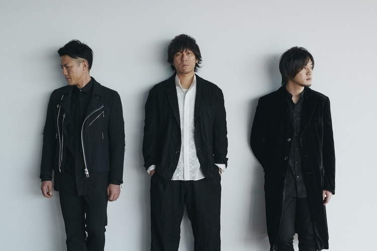
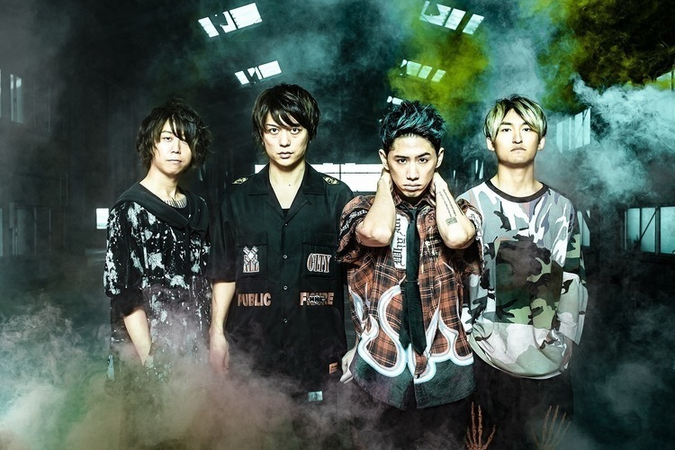

好きなアーティスト：back number & ONE OK ROCK
back number
back number について
幼少期に姉の影響で聴き始めてからずっとファン。
歌詞が心に響いて、メロディも最高です！
彼らのライブは毎回感動的で、特に「高嶺の花子さん」や「水平線」は外せません。
いつかライブで見てみたいです！
ONE OK ROCK
ONE OK ROCK について
ONE OK ROCKも大好きなバンドです。彼らのパワフルな楽曲とパフォーマンスにいつも勇気をもらっています！
特に海外での活躍は日本のバンドの誇りだと思います。これからも応援し続けます！